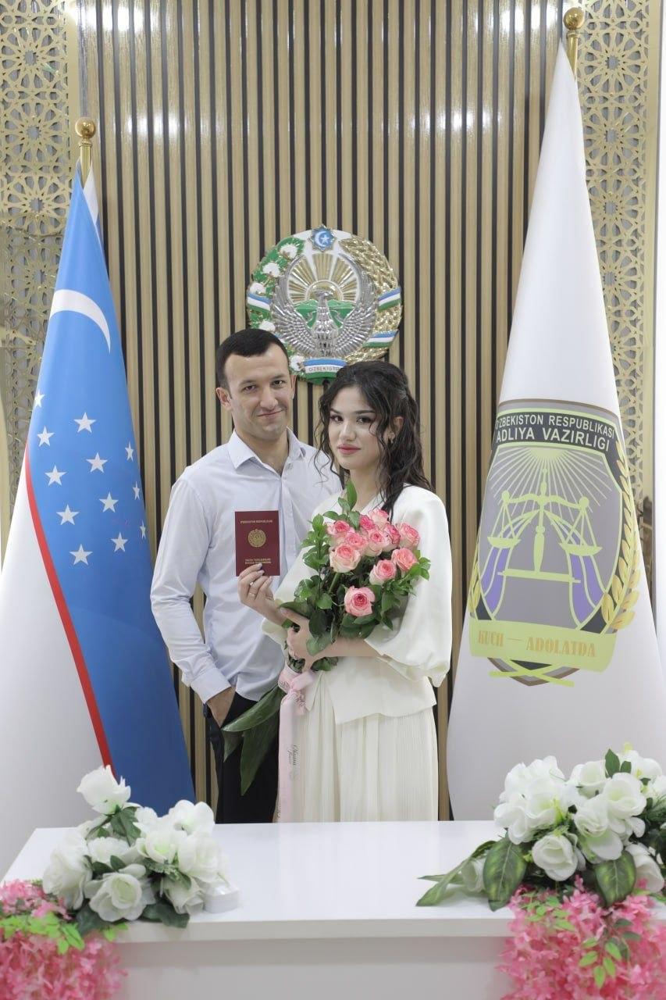

Birinchi kun
Fotiha to‘yi
qarindoshlar va kattalarimiz davrasida
Chorshanba
4noyabr
18:00
«Billur» restoraniKogon shahri
To‘y taklifnomasi
Fotiha to‘yiga taklifnoma
Nikoh oqshomiga taklifnoma
To‘y taklifnomasi
Fotiha to‘yi
Nikoh oqshomi
4 · 5 noyabr 2026
4 noyabr 2026
5 noyabr 2026
Buxoro
Pastga suring

Farzandlarimiz Otabek va Shahzodaning hayotidagi eng quvonchli kunlar yaqinlashib qoldi. Shu kunlarni siz bilan birga nishonlashni istaymiz va sizni to‘y marosimlarimizga lutfan taklif etamiz.
Farzandlarimiz Otabek va Shahzodaning fotiha to‘yiga sizni hurmat bilan taklif etamiz. Kattalarimizning oq fotihasi va duolari biz uchun eng qimmatli tuhfa.
Farzandlarimiz Otabek va Shahzodaning nikoh oqshomiga sizni lutfan taklif etamiz. Bu kechani siz bilan birga o‘tkazsak, quvonchimiz ikki barobar bo‘ladi.
Birinchi kun
qarindoshlar va kattalarimiz davrasida
«Billur» restoraniKogon shahri
Ikkinchi kun
Bazm kechasi
yaqinlar va do‘stlar bilan
«Afrosiyob» to‘yxonasiKogon shahri
Sizni intizorlik bilan kutib qolamiz!
Mehr bilan,Shahzodaning oilasi